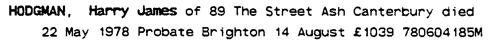
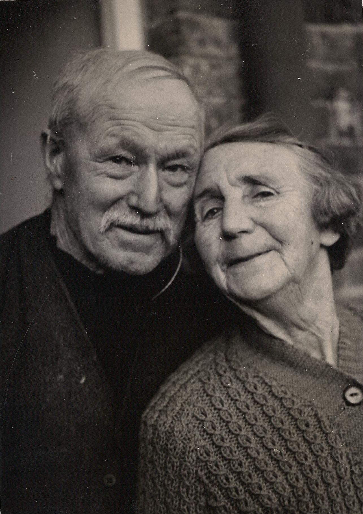
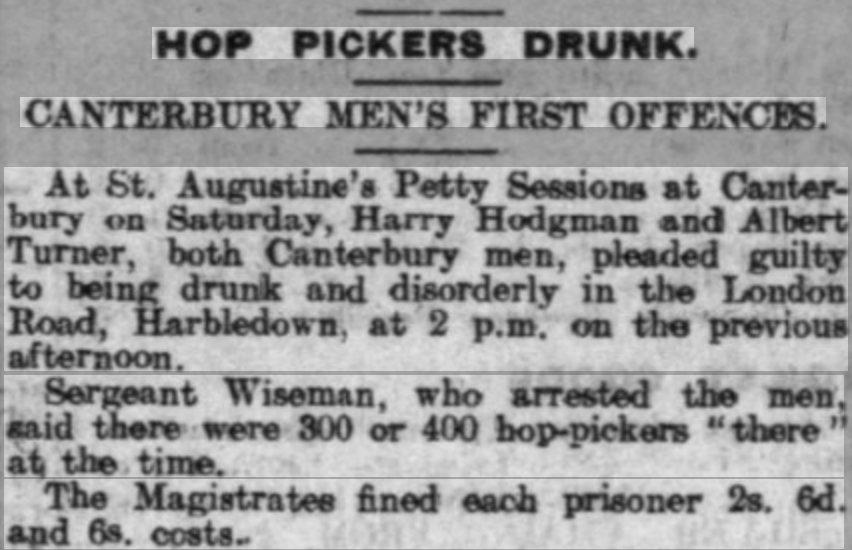

Harry James Hodgman 1887 - 1978
[ Home ] | [ Calendar ] | [ Surnames Index ] | [ Family History ], Harry Hodgman, the husband of Elizabeth Annie Lawrence (the great-aunt of Nigel Horne), was born in Eastry, Kent, England on May 19, 1887<span class="citation">1,2,3,4</span> and married Elizabeth (with whom he had 3 children: <a href="I357.html">Elizabeth A S</a>, <a href="I359.html">Harry J</a> and <a href="I358.html">Kathleen C</a>) in Thanet, Kent, England around Feb 1915<span class="citation">5</span>.</p><p>Throughout his life, Harry lived in several places: St Lawrence in Thanet on Apr 2, 1911<span class="citation">1</span>; at Hoaden Cottages, Ash, Kent on Sep 29, 1939<span class="citation">2</span>; and at 89 The Street, Ash, Kent in 1978. <p>He died on May 22, 1978 in Canterbury, Kent<span class="citation">3</span> (age: 91).
Children
- Elizabeth A S was born in Apr/may/jun 1916
- Harry J was born in Apr/may/jun 1921
- Kathleen C was born in Oct/nov/dec 1922
Citations
- 1911 England Census Online publication - Provo, UT, USA: Ancestry.com Operations, Inc., 2011.Original data - Census Returns of England and Wales, 1911. Kew, Surrey, England: The National Archives of the UK (TNA), 1911. Data imaged from the National Archives, London, England. (Age in 1911: 30Marital Status: Single; Relation to Head: Son)
- 1939 Register - Findmypast (was a husband in the household)
- England & Wales, Death Index: 1984-2005 Online publication - Provo, UT, USA: The Generations Network, Inc., 2007.Original data - General Register Office. England and Wales Civil Registration Indexes. London, England: General Register Office. © Crown copyright. Published by permission of the Cont
- England & Wales, FreeBMD Birth Index, 1837-1915 Online publication - Provo, UT, USA: The Generations Network, Inc., 2006.Original data - General Register Office. England and Wales Civil Registration Indexes. London, England: General Register Office. © Crown copyright. Published by permission of the Cont
- England & Wales Marriages 1837-2005 - Findmypast
Media
Harry J Hodgman - probate

Elizabeth Lawrence - Harry Hodgman

Whitstable Times

1939 Register Transcription - TNA-R39-1819-1819C-010-16
England & Wales deaths 1837-2007 - BMD/D/1978/2/AZ/000509/058
1939 Register Transcription - TNA-R39-1819-1819C-010-15
England & Wales births 1837-2006 - BMD/B/1887/2/AZ/000277/130
Family Tree

Generated by Ged2Site. Last updated on Jul 20, 2025